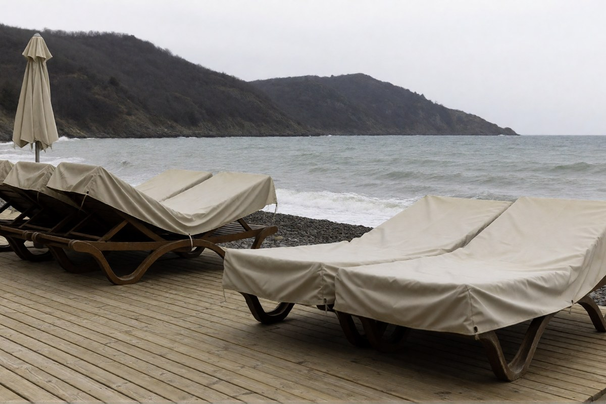

Mafia e antimafia · 18 novembre 2026
Una concessione su una spiaggia e un sindaco ai domiciliari

Ventuno misure cautelari nel Catanzarese per l'operazione Arione: secondo l'antimafia dietro uno stabilimento balneare c'era una cosca. Fra chi è finito ai domiciliari c'è il sindaco di Belcastro.
di Franco Zanghì
Il 18 novembre i carabinieri del Comando provinciale di Catanzaro hanno eseguito un'ordinanza di custodia cautelare emessa dal giudice per le indagini preliminari su richiesta della Direzione distrettuale antimafia. L'operazione si chiama Arione: ventuno persone, quindici in carcere e sei ai domiciliari, con circa centosettanta carabinieri impegnati, lo squadrone Cacciatori di Calabria e gli elicotteri.
Le accuse
Sono molte e a vario titolo: associazione mafiosa, concorso esterno, estorsione, corruzione, falso in atto pubblico, trasferimento fraudolento di valori, autoriciclaggio, truffa aggravata per il conseguimento di fondi pubblici, invasione di terreni. Per alcune è contestata l'aggravante del metodo mafioso o della finalità di agevolare il gruppo.
Secondo l'impianto accusatorio, al centro c'è un gruppo di 'ndrangheta che fa capo a esponenti della famiglia Pane, con base a Belcastro e presenza a Botricello, Marcedusa e Sersale, sotto l'influenza della locale di Mesoraca, in provincia di Crotone. Gli inquirenti descrivono una struttura verticistica, con una cassa comune.
Il sindaco
Fra chi è finito ai domiciliari c'è Antonio Torchia, sindaco di Belcastro, indagato per concorso esterno in associazione mafiosa. Secondo l'ANSA e le testate calabresi, l'ipotesi riguarda il rilascio di una concessione demaniale marittima e altri atti del Comune a favore di uno stabilimento balneare che per l'accusa era riconducibile a esponenti della cosca. Il Corriere della Calabria e il Quotidiano del Sud, che lo chiamano il sindaco-poliziotto, scrivono di presunti favori che andrebbero dalle balle di fieno al sostegno elettorale.
La terra e i sequestri
Nell'inchiesta ci sono anche circa cinquanta ettari di proprietà della Provincia di Catanzaro, fra Belcastro e Mesoraca, dati in comodato d'uso a un centro di ricerca: per gli inquirenti erano occupati abusivamente e usati per coltivare, allevare e tenere il foraggio. Sono state sequestrate quattro attività — un'impresa agricola, un bar, la società che gestisce lo stabilimento balneare e un'impresa edile — più un impianto di inerti a Sellia e somme ritenute profitto dei reati, per un valore stimato di circa quattro milioni e mezzo di euro. Un sequestro, va ricordato, non è una confisca.
Il punto
Tutti gli indagati, sindaco compreso, sono innocenti fino a sentenza definitiva, e siamo nella fase delle indagini preliminari: le accuse andranno verificate nel contraddittorio con la difesa. Alla data di pubblicazione non risultano dichiarazioni pubbliche del sindaco né dei suoi difensori. Resta la domanda che l'inchiesta mette sul tavolo: quando una concessione su una spiaggia passa dal Comune, chi controlla chi la chiede?
Fonti
- ANSA, «Operazione contro la cosca Pane, ai domiciliari il sindaco di Belcastro», 18 novembre 2026
- Il Quotidiano del Sud, «Operazione Arione a Belcastro, il sindaco-poliziotto a disposizione della cosca Pane», 18 novembre 2026
- Gazzetta del Sud, «Il sindaco di Belcastro avrebbe favorito lo stabilimento balneare della cosca Pane», 18 novembre 2026
- Il Dispaccio, «Operazione Arione, arresti e sequestri sulla cosca Pane», 18 novembre 2026
- Corriere della Calabria, «Il sindaco-poliziotto di Belcastro e i presunti favori al boss», 18 novembre 2026
Indagini preliminari in corso alla data di pubblicazione: le misure cautelari non sono condanne, il valore dei sequestri è una stima di chi li ha eseguiti e per tutti gli indagati vale la presunzione d'innocenza.
Questo articolo nasce dalla pagina Gli Eroi dell'Abisso, dove la stessa storia è raccontata in video.